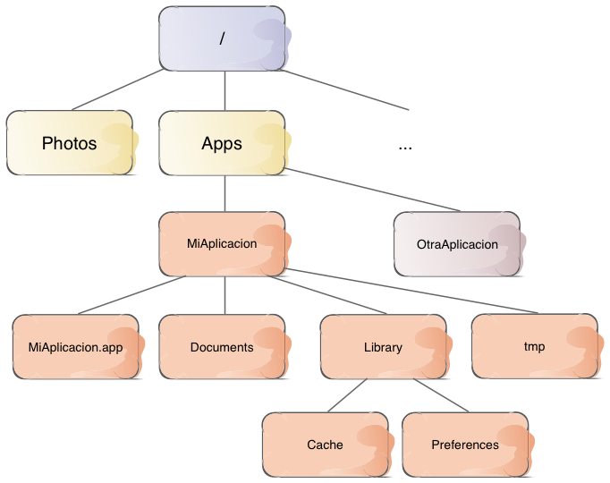

Sistema de archivos
Archivos y directorios en iOS¶
En iOS el sistema de archivos del dispositivo no es visible al completo para una aplicación cualquiera por motivos de seguridad. Cada aplicación está contenida en lo que se denomina un sandbox. Una aplicación solo puede acceder a los archivos y directorios dentro de su sandbox, y a la inversa otras aplicaciones no pueden acceder a ellos.
El sandbox tiene una estructura de directorios estandarizada, donde cada directorio tiene un papel específico reservado en la aplicación. Nuestra aplicación puede crear y modificar libremente archivos y directorios, aunque siempre debería respetar el papel que el sistema le asigna a cada directorio.
Primero veremos cuál es la estructura “estándar” del sandbox y luego el API para abrir, crear y modificar archivos y directorios.
El sistema de archivos de cada aplicación¶
Cuando se instala una aplicación en un dispositivo iOS el sistema crea una estructura de directorios como la que aparece en la siguiente figura.

Los directorios más importantes son los siguientes:
- nombre_de_la_aplicacion
.app/: aunque por la extensión podría parecer que es un archivo se trata de un directorio, que contiene lo que se denomina el bundle de la aplicación: el ejecutable, los iconos, imágenes, sonidos, etc. Documents/: es el directorio reservado para el contenido creado por el usuario. Si por ejemplo nuestra aplicación es un editor de textos, aquí es donde deberíamos almacenarlos.Library/: no suele contener directamente archivos sino solamente dos subdirectorios:Caches/: donde almacenamos los datos que se pueden volver a recrear sin problemas si es necesario. Por ejemplo índices de datos de nuestra aplicación que sirvan para hacer las búsquedas más rápidas. Por ello iOS no hace copia de seguridad de este directorio cuando hacemos un backup del dispositivo.Preferences/: las preferencias de configuración de la aplicación, que posteriormente veremos con más detalle.Application Support/: contenido generado por la aplicación pero que no ha sido creado directamente por el usuario.
tmp/: como puede deducirse está indicado para archivos y directorios temporales, de los que iOS tampoco hará copia de seguridad.
Localizar los directorios del sandbox¶
Antes de poder realizar cualquier operación sobre un archivo o directorio, tenemos primero que localizarlo en el sistema de archivos, es decir, encontrar su path absoluto - desde la raíz del sistema de archivos. Aunque en iOS no podemos “salirnos fuera” del sandbox este paso sigue siendo necesario.
En iOS podemos dar cualquier trayectoria de un archivo de dos formas distintas: como path local (un String) o como URLs, que uniformizan el tratamiento de las rutas y nos permite también especificar la localización de recursos remotos. Los nombres de los métodos en ambos casos suelen ser iguales, salvo que los que trabajan con paths generalmente acaban en Path y los que trabajan con URLs en URL.
Apple recomienda usar URLs en lugar de paths, ya que uniformizan el tratamiento de los recursos, sean locales o no.
La clase básica que se usa para interactuar con el sistema de archivos es el FileManager. No es necesario crear una instancia, podemos obtener la instancia por defecto con FileManager.default
El bundle de la aplicación
Acceder al directorio con el bundle de la aplicación (el .app) es sencillo:
1 | let bundleURL = Bundle.main.bundleURL |
Ya hemos visto antes este tipo de código cuando accedíamos a imágenes y otros archivos distribuidos junto a la aplicación.
Con bundlePath en lugar de bundleURL podemos obtener también el path en forma local (sin el file:// delante).
Los directorios “típicos”
Para obtener la URL de un directorio del sandbox se usa el método urls(for:in:), de la clase FileManager. Al método le pasamos un par de constantes:
- La clase de directorio que estamos buscando, como un valor enumerado del tipo
FileManager.SearchPathDirectory(por ejemplo paraLibrary/el valor eslibraryDirectory, paraDocumentsesdocumentDirectoryy paraCache,cachesDirectory). Se puede consultar la lista completa, aunque la mayoría de valores solo tienen sentido en OSX. - El "dominio" o ámbito de la búsqueda, un valor enumerado del tipo
FileManager.SearchPathDomainMask. En iOS siempre usaremos el valoruserDomainMask, que en OSX indica el directorio del usuario, pero en iOS en realidad se refiere al ámbito de la aplicación actual.
Por ejemplo, así obtendríamos la URL del directorio Documents de la aplicación actual:
1 2 3 4 5 6 7 8 9 10 | let urls = FileManager.default.urls(for:.documentDirectory, in:.userDomainMask) //Nótese que el método devuelve un array de URLs //Casi siempre nos interesa solo la primera if(urls.count>0) { let docDir = urls[0] print("El directorio 'Documents' es \(docDir)") } else { print("error al buscar el directorio 'Documents'") } |
Si ejecutamos el código anterior en un dispositivo real nos aparecerá una URL del estilo file:///var/mobile/Containers/Data/Application/id_de_la_aplicacion/Documents.
En el simulador la URL será similar pero la primera parte de la trayectoria cambia ya que se refiere a donde se está ejecutando la app dentro del simulador, algo como file:///Users/[nombre_usuario]/Library/Developer/CoreSimulator/Devices/[id_del_dispositivo]/data/Containers/Data/Application/[id_de_la_aplicacion]/Documents/. Para complicar un poco más el asunto, el identificador de la app cambiará cada vez que pongamos en marcha el simulador.
Durante el desarrollo en el simulador puede ser necesario localizar físicamente los directorios de la aplicación en el disco para poder verificar las operaciones sobre archivos y directorios. Para ayudarnos en esta tarea podemos usar alguna utilidad de terceros como la aplicación Simpholders. Esta aplicación es comercial, pero también existen aplicaciones libres como https://github.com/dsmelov/simsim. Otra opción, más tediosa, es usar la herramienta
simctl. En una terminal escribir:
Donde el id de la aplicación incluye no solo el nombre de la aplicación sino también el identificador del desarrollador (el id de la aplicación es lo que aparece en la configuración del proyecto, apartado
General, con el nombreBundle Identifier)
El directorio temporal
Podemos obtener el path del directorio para archivos temporales con la propiedad temporaryDirectory del file manager
1 2 | let tmpDir = FileManager.default.temporaryDirectory print("Dir. archivos temporales: \(tmpDir)") |
Listar el contenido de los directorios¶
Sabiendo la URL de un determinado directorio podemos listar sus contenidos con el método contentsOfDirectory(at:includingPropertiesForKeys:options:)
El siguiente ejemplo toma el directorio donde está el bundle de la aplicación y lista sus contenidos, mostrando para cada elemento la fecha de creación y si es o no un directorio.
1 2 3 4 5 6 7 8 9 10 11 12 13 14 15 16 | let urlBundle = Bundle.main.bundleURL let contenidos = try! FileManager.default.contentsOfDirectory(at: urlBundle, includingPropertiesForKeys: [.creationDateKey, .isDirectoryKey], options: .skipsHiddenFiles) print("Hay \(contenidos.count) elementos") for url in contenidos { print(url.lastPathComponent, terminator:"") let rv = try! url.resourceValues(forKeys: [.creationDateKey, .isDirectoryKey]) print(" \(rv.creationDate!)", terminator:"") if rv.isDirectory! { print(" (DIR)") } else { print("") } } |
- El parámetro
includingPropertiesForKeyses un array de constantes de la claseURLResourceKeydonde especificamos la "meta-información" a obtener para cada item (por ejemplo tamaño, fecha de creación, si es o no un directorio, etc). optionspuede ser 0 o bien.skipsHiddenFilespara indicar que no queremos obtener los archivos o directorios ocultos.
Una vez obtenemos los items con contentsOfDirectory, mostramos sus datos, incluyendo la información obtenida. La "meta-información" sobre el archivo/directorio se obtiene con el método de la clase URL llamado resourceValues. Este nos devuelve un objeto URLResourceValues con propiedades que se corresponden con los datos de la "meta-información"
Una versión simplificada del listado de directorios nos la da el método contentsOfDirectory(atPath:) que trabaja a partir de un path en forma de String y no permite obtener propiedades de los items, solo nos devuelve array de String con los nombres.
1 2 3 4 5 | let pathBundle = Bundle.main.bundlePath let contenidos = try! FileManager.default.contentsOfDirectory(atPath: pathBundle) for nombre in contenidos { print(nombre) } |